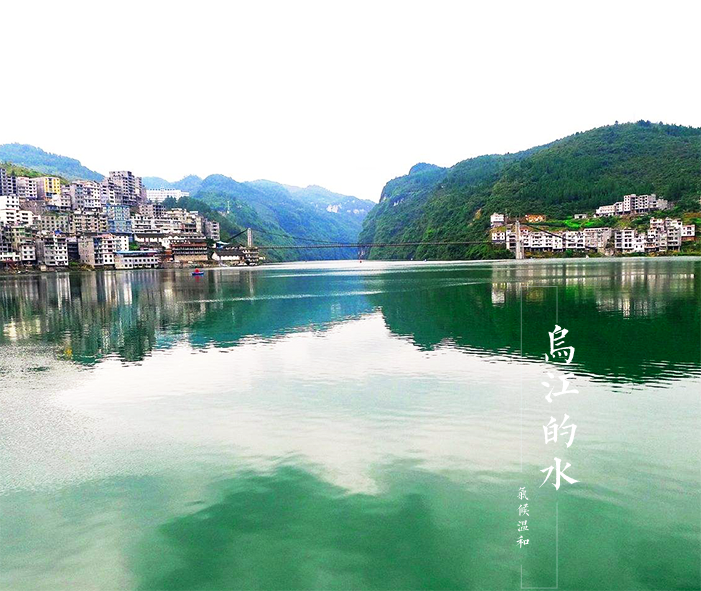

Unitary Yang have wujiang river basin and the two main river ruanjiang basin, which located in the southwest border of YouYang County in wujiang river, originated in guizhou weining map, has entered the unitary Yang wood, Gong Tan, along the river to chongqing fuling into the Yangtze river, 1070 km, wujiang river unitary Yang, about 60 kilometers, is the essence of the wujiang river "wujiang thyme gallery". Wujiang thyme gallery including wujiang river YouYang County Gong Tan town between thousands of wood township river, and from east to west back in wujiang river tributary of apeng river unitary Yang, covers an area of 240 square kilometers, including Gong Tan town, apeng river rafting scenic area scenic area scenic area, saddles, qingquan short city, wood yonghe temple, the stone forest scenic area, three Qian stone forest, suspension was buried, long gulley ecological tourism scenic spots. Wujiang baili gallery has a long history and a rich culture. The ancient town of gong tan has a history of more than 1,700 years.In ancient times, the cave was built in the warring states period. The saddle city is the site of the southern song dynasty. Differential person suspension was buried is the eastern han dynasty southern minority differential of customs, people towpaths long history, the "great tide", "bamboo zero poetry recess" accumulates thick cultural relics, considerable research value. It is the west gate scenic spot, which is the home of the tujia folk dancing, which is the cradle of the west lankarp and the wax dyeing. Ancient tujia back marry crying marriage, the unique corn lamp, mask Yang play play, horse lantern, folk young men and women to express the konoha love song of love, many folk handicrafts, has formed a unique local folk customs. Wujiang, the largest tributary of the south bank in the upper reaches of the Yangtze river, the first river in guizhou. The wujiang river has two sources: the south source of the river, the north source six and the custom of the three branches of the wujiang river. The wujiang river, the ancient name of the zangke river, the tang song and the qianjiang river, the yuan dynasty is called wujiang for the first time. Originated in guizhou province in weining map incense burner mountain flower fish hole, through to suck and the southeast of chongqing, the chongqing YouYang County, fuling district into the Yangtze river, the river total length of 1037 km, the basin area of 8.792 square kilometers.The above is the upstream of the hexi river, and the hui kou to sinan is the midstream, and the lower part is the lower part. The wujiang river system is a pinnate distribution, the basin is high in the southwest, low in the northeast, and the karst development in the basin. The terrain is dominated by highland, mountain, zhongshan and low mountain. The wujiang river is rich in water, and the entire river basin can contain 1042.59mw, and the wujiang river dam is the largest dam in the karst region of China. The wujiang river basin is a major agricultural and agricultural distribution area in guizhou, which is inhabited by people of han, yi, miao, buyi and hui. Is rich in grain, oil, tobacco, tea, raw lacquer, tung, wu bai and rhizoma gastrodiae, eucommia bark, dangshen, such as medicinal materials, coal, silica, iron, phosphorus, aluminum, manganese, lead, zinc, antimony, rich in minerals. Since ancient times, wujiang has been the most important bridge in the wujiang river, which is the most spectacular of the Bridges in guizhou province. Six river, wujiang river tributaries larger MaoTiaoHe, the xiangjiang river, qingshui river, crossing the river, furong jiang hong, zhuo, yu river, river springs, etc., there are hundreds of gulley jian chuan into, pinnate drainage. River basin belongs to subtropical monsoon climate region, moderate climate, abundant rainfall, annual average temperature of 13 ~ 18 ℃.
